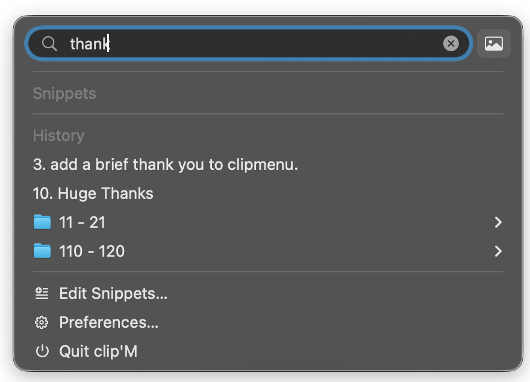
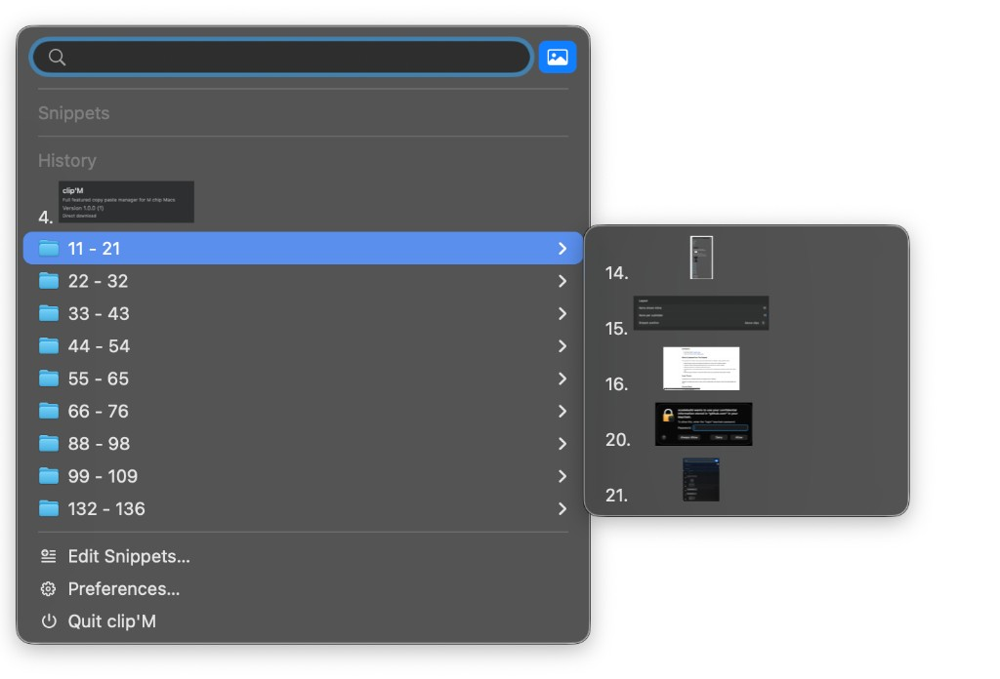
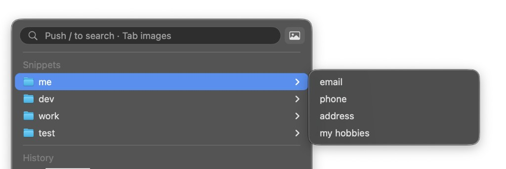
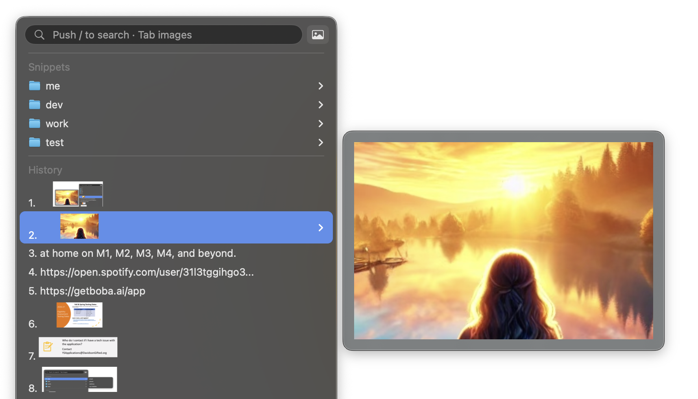

Search
Find any clip the moment you need it.
Press / and start typing. clip'M filters your history instantly so you are not scrolling through yesterday’s noise to find the one line you copied an hour ago.
Need screenshots only? Hit / then Tab or click the image button for image-only search — perfect when you remember what it looked like, not what it said.


Snippets
Keep the things you paste every day one keystroke away.
Organize reusable text into folders — email, phone, addresses, boilerplate — and open them from the same menu you already use for clipboard history.
The snippet system is simple enough to set up in a minute, and useful enough that you will wonder how you typed the same reply by hand for so long.

Previews
See it before you paste it.
Hover a clip or open a history group and a live preview appears beside the menu. Text, screenshots, and documents show up clearly so you pick the right item the first time.
No more pasting the wrong screenshot into a message, then undoing, then hunting again.

Actions
Transform a clip before you paste it.
Built-in actions handle the everyday stuff — put text in uppercase or lowercase, decode a messy URL, and more — right from the action menu. Prefer your own workflows? Write user-programmed actions and plug them into the same menu, so paste does exactly what you need.
The clipboard manager people loved — rebuilt for Apple silicon.
The original ClipMenu was a favourite for a decade: simple, fast, and always there when you needed it. Here it is ported to run natively on M‑series Macs, with great new features like search, image-only filtering, and live previews layered on top of what made ClipMenu great.
Get clip'M for free
Download the latest release, drag it to Applications, and start pasting smarter. Open source under the MIT license.
From United Visions, with care.
clip'M was developed by team members from United Visions — all about empowering you to copy the best ways of being, and paste that awesomeness all over the world.
Please enjoy the software. And remember to be careful with the thoughts and feelings you practice every day.